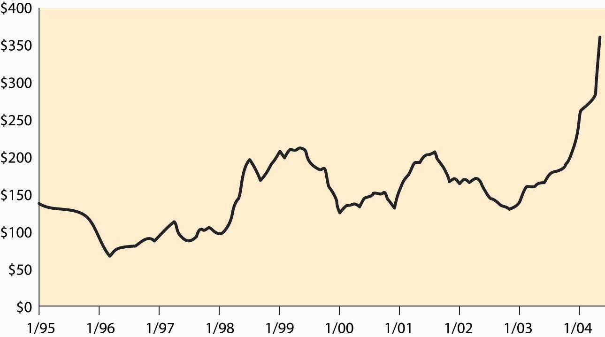

A solution to inefficiencies in the allocation of quota rights is to permit trading them. Tradable permitsQuotas for pollution that can be exchanged to create a market in the right to pollute. are quotas for pollution that can be exchanged to create a market in the right to pollute, and thereby create a tax on polluting. The emission of pollution requires the purchase of permits to pollute, and the price of these permits represents a tax on pollution. Thus, tradable permits represent a hybrid of a quota system and a Pigouvian taxation system—a quota determines the overall quantity of pollution as in a quota system, determining the supply of pollution rights, but the purchase of pollution rights acts like a tax on pollution, a tax whose level is determined by the quota supply and demand.
Figure 7.4 SO2 permit prices
The United States has allowed the trading of permits for some pollutants, like sulfur dioxide. Figure 7.4 "SO" shows the price of sulfur dioxide permits over the past decade.Source: Environmental Protection Agency, July 22, 2004, http://www.epa.gov/airmarkets/trading/so2market/alprices.html Each permit conveys the right to emit one ton of sulfur dioxide into the air. The overall pollution level is being reduced over time, which accounts for some of the increase in prices. These prices represent significant taxes on large polluters, as a coal-fired power plant using coal with high sulfur content can annually produce as much as 200,000 tons of sulfur dioxide.
The major advantage of a tradable permits system is that it creates the opportunity for efficient exchange—one potential polluter can buy permits from another, leaving the total amount of pollution constant. Such exchange is efficient because it uses the pollution in a manner creating the highest value, eliminating a bias toward “old” sources. Indeed, a low-value polluter might sell its permits and just shut down if the price of pollution was high enough.
A somewhat unexpected advantage of tradable permits has been the purchase of permits by environmental groups like the Sierra Club. Environmental groups can buy permits and then not exercise them, as a way of cleaning the air. In this case, the purchase of the permits creates a major positive externality on the rest of society, since the environmental group expends its own resources to reduce pollution of others.
Tradable permits offer the advantages of a taxation scheme—efficient use of pollution—without needing to estimate the social cost of pollution directly. This is especially valuable when the strategy is to set a quantity equal to the current quantity, and then gradually reduce the quantity in order to reduce the effects of the pollution. The price of permits can be a very useful instrument in assessing the appropriate time to reduce the quantity, since high permit prices, relative to likely marginal external costs, suggest that the quantity of the quota is too low, while low prices suggest that the quantity is too large and should be reduced.